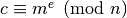
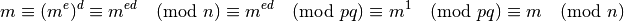
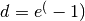

Introduzione¶
RSA è un crittosistema a chiave pubblica.
Alice vuole inviare un messaggio a Bob, ma i due non hanno mai comunicato prima d’ora. Ogni messaggio che Alice invia a Bob potrebbe essere intercettato e letto da Eva. Alice | dovrebbe inviare una chiave a Bob, ma anche in questo caso Eva potrebbe intercettarla per leggere ogni altro messaggio.
RSA consente ad Alice di scrivere dei messaggi a Bob rendendo quasi impossibile decifrarli. Eva è fuori dai giochi. RSA è basato sulla difficoltà di fattorizzare gli interi in numeri primi, fu proposto da Rivest, Shamir e Adleman nel 1977.
Brevemente Bob:
- Sceglie due numeri primi p e q grandi e distinti, quindi li moltiplica, ottenendo

- Sceglie un esponente di cifratura e, tale che (e,(p-1)(q-1)) = 1
- Invia ad Alice la coppia (n,e) mantenendo segreti i valori di p e q.
Alice non ha mai bisogno di conoscere p e q per inviare un messaggio in modo sicuro a Bob, infatti:
- Scrive un messaggio come un numero m. Se m è maggiore di n allora viene spezzato in blocchi di dimensione inferiore ad n, ma supponiamo m < n
- Produce il messaggio da inviare 
- Invia c a Bob
Bob che conosce p e q può calcolare mediante la funzione totiente di Eulero l’esponente di decifrazione d, tale che de = 1 (mod(p-1)(q-1)) quindi può decifrare il messaggio che in virtù dei teoremi di Fermat ed Eulero è:

Se Eva intercetta (n,e) non può decifrare il messaggio c inviato da Alice a Bob; per farlo avrebbe bisogno di  (ovvero del valore della funzione totiente di Eulero per n) oppure di p e q, la fattorizzazione di n. Poichè si dimostra che i due problemi sono equivalenti e fattorizzare un numero è ritenuto un problema difficile, possibile solo sotto certe condizioni in tempi ragionevoli, Alice e Bob sono al sicuro.
Note
In realtà Eva potrebbe fornire ad Alice la sua chiave pubblica e ritrasmettere i messaggi a Bob in modo trasparente. In questo modo Eva si è intromessa nella comunicazione (man in the middle). Nel resto della trattazione supponiamo che non sia possibile.
Questa applicazione è stata realizzata per l’esame del corso di Crittografia del Prof. Norberto Gavioli, Università degli Studi dell’Aquila. Lo scopo è mostrare come sia possibile generare dei numeri primi, mediante differenti test di primalità, e come, sotto opportune condizioni, sia possibile fattorizzare un numero in primi.
L’interesse pratico è relativo a molti campi della crittografia:
- generare primi è utile per produrre chiavi in RSA, in ElGamal...
- fattorizzare è di interesse nella crittoanalisi e in molte altre applicazioni.
Nel seguito si descriverà l’applicazione in questione, offrendo, quando ritenuto opportuno, spiegazioni sugli algoritmi implementati, quali:
- Test di primalità: Fermat, Miller-Rabin, AKS;
- Metodi di fattorizzazione: metodo p-1 e metodo dell’esponente (trattati assieme per ragioni che verranno approfondite in seguito), crivello quadratico e un tipo di attacco basato sullo sviluppo in frazioni continue.